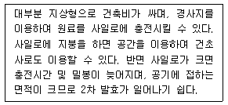

축산산업기사 (2006-09-10 기출문제)
1과목: 가축번식 육종학
1. 정소의 간세포(間細胞)를 자극하여 웅성호르몬인 안드로겐(androgen)을 분비하게 하여 성욕을 일으키게 하는 호르몬은?
- FSH(난포자극호르몬)
- LH(황체형성호르몬)
- HCG(태반융모성생식선 자극 호르몬)
- PMSG(임마혈청성생식선 자극 호르몬)
(정답률: 44%)

2. 분만준비기에 일어나는 현상이 아닌 것은?
- 자궁내 에너지원과 단백질 비축
- 자궁경관의 확장과 자궁근 수축
- 요막액의 유출
- 양막액의 유출
(정답률: 68%)
3. 근친교배의 유전적 효과는?
- 유전자의 Hetero성 증가
- 증체 및 도체의 품질 개량
- 번식력 성장률 증가
- 유전자의 Homo성 증가
(정답률: 85%)
4. 수정시 난자에서 다정자거부반응(多精子拒否反應)에 의하여 다정자 침입을 막는 곳은?
- 과립세포
- 투명대
- 위란강
- 핵막
(정답률: 83%)
5. 잡종강세 현상이 잘 나타나는 노새를 만드는 교배법은?
- 암말 × 수나귀
- 암소 × 수나귀
- 암나귀 × 수말
- 암말 × 수소
(정답률: 87%)
6. 아침에 암퇘지의 허리를 눌러 보았더니 가만히 서서 수컷을 허용하는 자세를 취하였다. 이 돼지의 교배 적기는?
- 당일 오전에서 오후에 걸쳐서
- 당일 오후에서 다음날 아침에 걸쳐서
- 당일 오전부터 밤에 걸쳐서
- 다음날 낮 동안에
(정답률: 84%)
7. 착유를 너무 자주하거나, 노령기의 소에게 양질의 조사료공급이 부족할 때 난소가 작아져 단단하게 되는 암소의 번식 장해는?
- 무발정
- 난소난종
- 난소기능정지
- 난소위축
(정답률: 71%)
8. 돼지 개량에 있어 스트레스 감수성(PSS) 돼지를 판정하는 방법이 아닌 것은?
- 할로테인(halothane) 검정법
- CPK 활성조사법
- DNA 검사법
- 도체 검사법
(정답률: 76%)
9. 종모우 선발에 이용될 수 없는 방법은?
- 개체선발
- 후대검정
- 혈통선발
- 자매검정
(정답률: 41%)
10. 혈장내의 칼슘과 무기인량의 급격한 감소로 발생하는 분만 시 젖소에서 가장 많이 발생하는 질병은?
- 유열
- 목초강식증
- 케토시스증
- 임신중독증
(정답률: 94%)
11. Landrace종의 평균 산자수가 12두, Yorkshire종의 평균 산자수가 10두이고, 이들 교배에 의한 F1의 평균 산자수가 14두인 경우 대략 잡종강세 강도는?
- 약 24.3%
- 약 27.3%
- 약 29.3%
- 약 31.3%
(정답률: 91%)
12. 송아지가 생후 200일에 이유시 생체중이 195㎏였으나 생후 360일에는 370㎏였다면 이유 후 일당 증체량은?
- 1.04㎏
- 1.09㎏
- 1.14㎏
- 1.119㎏
(정답률: 84%)
13. 젖소의 가장 이삭적인 체형으로 알맞은 것은?
- 역삼각형
- 쐐기형
- 장방형
- 정방형
(정답률: 96%)
14. 일정한 성주기가 없는 가축은?
- 면양
- 산양
- 돼지
- 토끼
(정답률: 94%)
15. 한우 검정 요령에 관한 설명 중 틀린 것은?
- 당대 검정이라 함은 후보 종무우를 선발하기 위하여 당대 수소의 능력을 검정하는 것을 말한다.
- 후대 검정이란 보증 종모우를 선발하기 위하여 후보 종모우 자손의 능력을 검정하는 것을 말한다.
- 후보 종모우라 함은 당대검정을 위하여 검정장으로 이동된 수소를 말한다.
- 보증 종모우란 후대 검정을 통하여 선발된 능력이 공인된 소를 말한다.
(정답률: 80%)
16. 부모. 조부모 등의 선조능력에 근거하여 종축의 가치를 판단하여 선발하는 방법은?
- 후대검정
- 가계선발
- 자매검정
- 혈통선발
(정답률: 72%)
17. 발정주기 중 소를 제외한 대부분의 가축이 배란(排卵)을 하는 단계에 대한 설명으로 옳은 것은?
- 발정휴지기에서 발정기오 이행하는 시기이다.
- 난포로부터 에스트로겐(estrogen)의 분비가 완성해진다.
- 황체에서 생성되는 프로게스테론(progeterone)의 영향을 받는 시기이다.
- 난소주기(卵巢週期)로 보아서는 황체기(黃體期)에 속하는 시기이다.
(정답률: 36%)
18. 소에서 일반적으로 이용하는 임신진단법은?
- 방위 효소법
- 질내 검사법
- 직장 검사법
- 외부 촉진법
(정답률: 95%)
19. 산란계의 초년도 산란수를 지배하는 요소가 아닌 것은?
- 조숙성
- 산란강도
- 취소성
- 체형
(정답률: 87%)
20. 소의 태반에 대한 설명 중 틀린 것은?
- 자궁내 자궁소가 없고, 융모막의 융모가 태반의 표면 전체에 산재하는 상피융 모성 태반이다.
- 궁부성 태반으로 자궁소구가 있다.
- 궁부와 자궁소구가 접합한 태반분엽이 있다.
- 비 임신각에도 궁부는 발달하나 태반분엽은 형성되지 않는다.
(정답률: 78%)
2과목: 가축사양학
21. 가축의 성장에 필요한 에너지 요구량이란?
- 조직의 생성에만 필요한 에너지
- 가축의 체(體) 유지에 필요한 에너지
- 가축의 체(體) 유지와 새로운 조직에 필요한 에너지
- 가축의 번식과 생산에 필요한 에너지
(정답률: 85%)
22. 착유우에 있어 섭취한 에너지가 최종적으로 이용되는 단계에 이르기까지 여러 과정에서 소실되어 최종적으로 우유생산이나 증체를 위해 이용된다. 우유생산을 위한 정미에너지를 나타내는 것은?
- DE
- ME
- TEm
- NEL
(정답률: 66%)
23. 착유우 사료 중에 사용되는 완충제의 사용을 고려할 경우가 아닌 것은?
- 유지방 함량이 높을 경우
- 총 급여사료 중 조사료가 45% 이하일 경우
- 시료를 분쇄 또는 펠렛화 했을 경우
- 농후사료 급여량이 체중의 2% 이상일 경우
(정답률: 65%)
24. N.R.C. 사양표준에 의하여 체중 1.8㎏인 산란계의 경우에 1일 사료 섭취량은?
- .110g
- 150g
- 180g
- 210g
(정답률: 58%)
25. 비육우의 체구성 성분의 발육이 빠른 순서부터 바르게 연결한 것은?
- 뼈 - 근육 - 뇌 - 지방
- 지방 - 근육 - 뼈 - 뇌
- 뇌 - 뼈 - 근육 - 지방
- 근육 - 뼈 - 뇌 - 지방
(정답률: 87%)
26. 다음 중 비육우의 성장과 도체특성에 영향을 미치는 요인으로 적합하지 않은 것은?
- 성별
- 품종
- 출생지역
- 사료의 영양수준
(정답률: 91%)
27. 다음 중 농후 사료가 아닌 것은?
- 옥수수
- 어분
- 대두박
- 고구마넝쿨
(정답률: 77%)
28. 비육우의 육성기 조사료 다급시 장점이 아닌 것은?
- 배합사료 섭취량 증가
- 소화기관과 골격 발달
- 건강한 비육밑소 육성
- 불가식 지방 조기침착 방지
(정답률: 86%)
29. 다음 중 필수지방산이 아닌 것은?
- oleic acid
- linoleic acid
- linoleic acid
- arachidonic acid
(정답률: 82%)
30. 사료의 조단백질 함량이 40%이고, 소화율이 70%일 때의 가소화조단백질(DCP) 함량은?
- 2,800%
- 280%
- 28%
- 20%
(정답률: 78%)
31. 가축에 부적하게 되면 부전각화증이 발생하고 모피의 형성이 저해를 받게되며 또한 번식관련 조절호르몬인 난포자극호르몬(FSH)과 황체호르몬(LH)의 기능을 조절하는 광물질은?
- Fe
- Mn
- Zn
- CO
(정답률: 71%)
32. 다음 중 산란계에 가장 많이 필요한 무기물은?
- 아연
- 마그네슘
- 칼슘
- 칼륨
(정답률: 68%)
33. 요오드가가 높은 사료를 급여하면 어떤 지방을 생산하는가?
- 경성지방
- 연성지방
- 반경성지방
- 반연성지방
(정답률: 66%)
34. 탄수화물의 영양소로서 가장 기본적인 기능은?
- 근육형성
- 내분비촉진
- 효소분비촉진
- 에너지공급원
(정답률: 96%)
35. 산란계의 부화율을 높이는 비타민은?
- 비타민 B6
- 비타민 B12
- 비타민 K
- 비타민 C
(정답률: 71%)
36. 유지에너지 요구량 결정시험 중 시험개시시와 종료시의 체조성과 공복시 체중을 측정하여 유지와 증체에 필요한 요구량 결정법은?
- 기초대사에 의한 방법
- 사양시험에 의한 방법
- 에너지평형법
- 도체분석법
(정답률: 43%)
37. 각 영양소의 대사에너지(ME)가 비육에 이용되는 효율이 가장 높은 가축은?
- 육우
- 면양
- 돼지
- 육계
(정답률: 47%)
38. 브로일러(broiler) 생산에서 에너지가 높은 사료를 급여할 때 나타나는 효과 중 틀린 것은?
- 증체율이 높다.
- 사료 섭취량이 많다.
- 사료 효율이 좋다.
- 출하일령이 단축된다.
(정답률: 69%)
39. 가축의 음수량 제한시 나타나는 현상이 아닌 것은?
- 분뇨 배설량 감소
- 가축의 활력 저하
- 사료섭취량 증가
- 체중감소
(정답률: 80%)
40. 가축의 방목과 건초생산을 위한 화본과목초와 두과목초의 적정 혼파 비율은?
- 7 : 3
- 4 : 6
- 5 : 5
- 2 : 8
(정답률: 73%)
3과목: 축산경영학
41. 축산경영에서 노동력의 능률을 향상시키는 방안일가고 볼 수 없는 것은?
- 작업방법의 표준화
- 노동수단의 고도화
- 작업의 분업화
- 작업의 다양화
(정답률: 68%)
42. 다음 중 결합생산물이 아닌 것은?
- 비육우와 퇴비
- 우유와 송아지
- 육계와 계란
- 양털과 양고기
(정답률: 64%)
43. 축산경영에서 이윤 최대화의 조건이 아닌 것은?
- 총수익과 총비용의 차액이 최대일 때
- 총비용이 가장 낮을 때
- 생산요소와 생산물과의 가격비가 한계생산물과 일치할 때
- 한계수익과 한계비용이 일치할 때
(정답률: 79%)
44. 초지자본에 속하지 않는 것은?
- 종자대
- 사료대
- 비료대
- 노동비
(정답률: 65%)
45. 특정 생산요소의 양이 주어짐으로써 어느 한생산물의 생산을 증가시키면 다른 한 생산량이 감소하는 경우 이 두 생산물의 관계는?
- 결합생산물
- 보완생산물
- 경합생산물
- 보합생산물
(정답률: 79%)
46. 감가상각비 계산법 중 가장 간단하며 농업경영이나 축산경영에서 보편적으로 사용되고 있는 방법은?
- 정률법
- 정액법
- 급수법
- 비례법
(정답률: 90%)
47. 초지에 대한 감가상각을 하지 않게 하는 주된 원인 요소가 되는 것은?
- 배양력
- 불가소성
- 불가동성
- 불소모성
(정답률: 77%)
48. 축산 경영진단의 순서를 바르게 연결한 것은?
- 경영실태의 파악 - 문제의 분석 - 문제의 발견 - 대책수립 - 처방과 평가
- 문제의 발견 - 경영실태의 파악 - 문제의 분석 - 대책수립과 처방
- 문제의 발견 - 문제의 분석 - 대책수립 - 경영실태의 파악 - 처방과 평가
- 경영실태의 파악 - 문제의 발견 - 문제의 분석 - 대책수립과 처방
(정답률: 75%)
49. 방목일수가 160일인 어느 낙농가에서 젖소 두당 1일 목초 채식량이 20㎏이고, 목초채식율이 80%라고 한다. ha당 목초생산량이 4,000㎏이라면 이 때의 젖소두당 초지 소요 면적은?
- 0.5ha
- 0.6ha
- 1ha
- 1.6ha
(정답률: 55%)
50. 유사비(乳飼費) 산출방법으로 옳은 것은?
- 낙농경영의 수익성을 표시한 것이다.
- 총사료비를 낙농 조수익으로 나누 것이다.
- 구입사료비에 대한 우유판매액의 비율이다.
- 우유수입에 대한 구입사료비의 비율이다.
(정답률: 43%)
51. 축산경영의 경제적 기능으로 옳지 않은 것은?
- 가축의 종류를 선택하고 결정한다.
- 가축의 생산순서와 생산규모를 결정한다.
- 경영성과인 생산물을 처리한다.
- 생산과정의 관리 및 경영에 채용할 생산기술을 결정한다.
(정답률: 53%)
52. 유동비에 속하지 않는 것은?
- 사료비
- 동력비
- 자가노력비
- 소농구비
(정답률: 57%)
53. 생산비 산출 비목에 포함되지 않는 것은?
- 자가노력비
- 수도광열비
- 차입금
- 감가상각비
(정답률: 60%)
54. 축산경영의 고정자산 평가에 있어서 일반적이며 기초로 하는 평가법은?
- 시가의 변동에 따라 평가한다.
- 취득원가에 의해 평가한다.
- 시장가격에 의해 평가한다.
- 추정가격에 의해 평가한다.
(정답률: 74%)
55. 조수익이 900,000원이고, 경영비가 676,000원, 생산비는 720,000원인 경영의 소득율은?
- 34%
- 30%
- 25%
- 20%
(정답률: 43%)
56. 고정자본재의 감가 원인에 속하지 않는 것은?
- 사용소모에 위한 감가
- 자연적 소모에 의한 감가
- 시설에 의한 감가
- 진부화에 의한 감가
(정답률: 44%)
57. 축산경영에서 가족경영의 특성이 아닌 것은?
- 경영과 가계의 미분리
- 주로 고용노동을 의미
- 가족노동에 따라 경영규모 결정
- 가계의 유비가 경영의 목표
(정답률: 90%)
58. 축산경영의 특징과 거리가 먼 것은?
- 경종농업의 보완관계에 있다.
- 우회생산적 성격이 강하다.
- 토지면적으로 규모를 결정한다.
- 생산물의 부가가치가 크다.
(정답률: 69%)
59. 축산경영 조직의 단일화가 갖는 장점이라 할 수 있는 것은?
- 토지의 합리적 이용 가능
- 노동의 숙련도 제고 및 분업이익의 획득 가능
- 자연적∙경제적 위험분산 가능
- 자금회전의 원활화 가능
(정답률: 44%)
60. 낙농경영에서 조수입 1,000만원, 고정비 500만원, 변동비 200만원일 때 손익분기조수입은?
- 310만원
- 420만원
- 530만원
- 625만원
(정답률: 63%)
4과목: 사료작물학
61. 알팔파는 사료가치가 매우 우수하여 목초의 여왕이라 불린다. 우리나라에서 알팔파 재배시 제한요인이라고 생각되지 않는 것은?
- 토양의 산성
- 월동 불가능
- 붕소의 결핍
- 근류균의 부재
(정답률: 70%)
62. 수단그라스(Sudangrass)에 대한 설명으로 맞는 것은?
- 생육이 빠르며 토양이 척박한 곳에세도 잘 자란다.
- 품종에는 윈톡(wintok), 카유스(cayuse), 아켈라(akela) 등이 있다.
- 초장이 낮은 어린시기의 것을 청예로 이용할 경우 청산 중독의 위험이 있다.
- 파종량은 조파의 경우 ha당 80~120㎏ 정도이다.
(정답률: 80%)
63. 다음 설명하는 사일로의 종류는?

- 벙커(bunker)사일로
- 스태크(stack)사일로
- 탑형(tower)사일로
- 기밀(airtight)사일로
(정답률: 64%)
64. 한지형 사료작물을 잘못 설명한 것은?
- 자온에 잘 견딘다.
- 북방형 사료작물이다.
- 성장이 5 ~ 6월에 최고에 달한다.
- 하고현상이 없다.
(정답률: 86%)
65. 다음 중 목초의 생육진행에 따른 설명으로 틀린 것은?
- 잎의 비율이 감소하고 줄기의 비율이 높아진다.
- 비구조적 탄수화물의 함량은 낮아진다.
- 라그닌과 세포벽 물질의 비율이 증가한다.
- 수량은 점차적으로 증가한다.
(정답률: 75%)
66. 사료용 유채에 대한 설명으로 틀린 것은?
- 너무 많이 생산될 때에는 건초로 조제하는 것이 좋다.
- 내상성(耐霜性)이 우수하여 가을 늦게까지 이용이 가능하다.
- 질소시비수준에 민감하며, 늦게 파종하면 생초 수량이 낮아진다.
- 연맥과 혼파하면 수량도 높고 기호성이 좋아지며, 다른 화본과에 비하여 토양 개량효과도 높다.
(정답률: 52%)
67. 사일리지 제조시 첨가물과 그 작용을 연결시킨 것 중 잘못된 것은?
- 개미산 - pH저하
- 초성아황산소다 - 유해발효를 억제
- 요소 - 재료의 양분을 보강
- 당밀 - 젖산생성을 억제
(정답률: 88%)
68. 토양적응성이 좋고 월동이 잘 되어 우리나라 전국에서 재배가 가능하며, 특히 답리작으로 많이 재배되고 있는 사료 작물은?
- 연맥(oat)
- 유채(rape)
- 호맥(rye)
- 이탈리안 라이그라스(Italian ryegrass)
(정답률: 70%)
69. 목초는 다양한 방법에 의하여 반식을 한다. 다음 목초 중 지하경이나 포복경이 없이 종자에 의해서만 번식하는 목초는?
- 토올 페스큐(Tall fescue)
- 리드 카나리그라스(reed canarygrass)
- 스무스 브롬그라스(Smooth bromegrass)
- 오차드그라스 (orchardgrass)
(정답률: 47%)
70. 건초는 수분함량을 15%이하로 하여야 하기 때문에 건조과정에서 영양소 손실이 많이 나타난다. 건초 조제시에 일반적인 조건하에서 가장 많이 나타나는 손실은?
- 호흡(呼吸)손실
- 용탈(溶脫)손실
- 탈엽(脫葉)손실
- 저장(貯藏)손실
(정답률: 58%)
71. 토양교정에 이용되는 석회에 대한 설명으로 잘못된 것은?
- 석회 입자가 작을수록 교정속도가 빠르다.
- 전충 시용이 표층시용보다 교정속도가 빠르다.
- 입자가 굵을수록 효과의 지속성이 오래 간다.
- 석회는 시비량을 한꺼번에 전량 살포하는 것이 교정효과가 크다.
(정답률: 90%)
72. 화본과 목초의 분얼에 대한 설명 중 틀린 것은?
- 온도가 높아지면 많아진다.
- 생식생장기에 많다.
- 영양생장기 마지막에 최대에 달한다.
- 여름과 가을을 거치면서 감소한다.
(정답률: 58%)
73. 초지에서 1번초의 수확시기 결정은 다른 어떤 결정보다도 매우 중요하다. 첫 번째 수확시기가 초지에 미치는 영향 중 틀린 것은?
- 초지의 식생구성 비율에 영향을 미친다.
- 연중 수확횟수와 수량분포에 영향을 미친다.
- 목초의 재생과 수량에 영향을 미친다.
- 연간시비량과 하고 피해에 영향을 미친다.
(정답률: 76%)
74. 목초의 춘파(春播)와 추파(秋播)의 특성이 잘못 설명된 것은?
- 춘파는 잡초의 피해를 받기 쉽다.
- 추파는 병충해의 피해가 적다.
- 추파는 다음해의 수량이 많다.
- 춘파는 목초의 월동율을 낯춘다.
(정답률: 66%)
75. 옥수수의 사일리지 제조할 때에 세절 재료는 어느 것이 가장 적당한 상태인가?
- 즙액이 손가락 사이에 나오고 그 모양이 유지되는 상태
- 즙액이 거의 없고 모양이 유지되는 상태
- 즙액이 아주 없고 모양이 서서히 무너지는 상태
- 즙액이 매우 많고 모양이 급히 무너지는 상태
(정답률: 59%)
76. 건초의 상대사료가(RFV)가 130이고, 잎의 비율이 35~45%이며, 이물질이 10%이하이고, 곰팡이 썩은 냄새, 먼지 등이 없는 콩과(두과) 건초의 등급은?
- 1등급
- 2등급
- 3등급
- 4등급
(정답률: 66%)
77. 건초의 안전 저장과 연관성이 가장 없는 것은?
- 저장장소
- 수분함량
- 퇴적밀도
- 잎의 비율
(정답률: 60%)
78. 두과(콩과)목초의 특징이 아닌 것은?
- 근류균을 형성
- 주요 단백질 공급원
- 잎맥은 그물모양
- 뿌리는 섬유상의 수염뿌리
(정답률: 85%)
79. 초지조성시 파종상이 갖추어야 될 궁극적인 목적과 가장 거리가 먼 것은?
- 배수가 잘 될 것
- 표토가 아주 고울 것
- 수분이 많을 것
- 잡초가 없을 것
(정답률: 77%)
80. 다발형 상번초이며 기호성이 좋고 유식물활력과 초기생육이 좋아 파종이 쉬우며 단기간의 수량도 높으나 월동율이 다소 떨어지는 사료작물은?
- 이탈리안 라이그라스
- 페레니얼 라이그라스
- 오차드 그라스
- 토올 페스큐
(정답률: 76%)